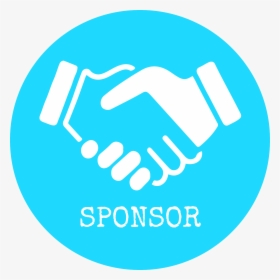

Réseau panafricain
Rencontrez des développeurs, entrepreneurs et investisseurs venus de tout le continent.
Dakar, Sénégal · 15-17 mars 2027
S'inscrire Voir le programmeJours
Heures
Min
Sec
Participants
Intervenants
Jours
Pays
Rencontrez des développeurs, entrepreneurs et investisseurs venus de tout le continent.
Rencontrez des développeurs, entrepreneurs et investisseurs venus de tout le continent.
Présentez votre projet devant des investisseurs actifs dans l'écosystème tech africain.
Gagnez en visibilité auprès des médias et acteurs clés de la tech en Afrique.
Fondatrice, FinTech Sénégal
Sénégal
CTO, TechHub Ghana
Ghana
Investisseuse, Capital Afrique
Côte d'Ivoire
Entrepreneur, AgriTech Maroc
Maroc
